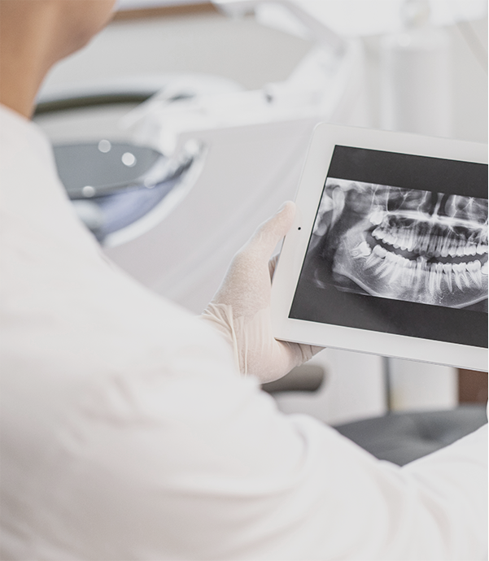

환자와 함께한 제로치과의 일상과 진료 이야기를 전해드립니다.
ZERO DENTAL CLINIC
환자와 함께 성장해 온 제로치과의 진료철학을 소개합니다

">무통치료(Pain-zero)를
중심으로 정밀 진단과
최첨단 기술을 사용합니다.
환자분 개개인의 상태와
진단에 귀를 기울이고
치료 계획을 수립합니다.
자체 기공소와 최신 의료
장비를 바탕으로 정확한
진단과 시술을 진행합니다.
온라인 예약, 평일 야간, 토요일
진료와 함께 당일 보철치료
(One-day)를 제공합니다.
보건복지부 인증 풍부한 임상경험의 숙련된 전문의들이 전문적이고 개인화된 치과 의료 서비스를 제공합니다.
zeiss 미세현미경, 3D CT, Rayface(3D 안면스캐너), 프라임스캔(구강스캐너), 바이탈모니터, TMD 레이저 등 최신 장비들을 보유하고 있습니다.
자체 디지털기공 센터를 보유하여 환자마다의 구강 상태를 정밀하게 분석하고 개인 맞춤형 보철물을 신속하게 제작해 자연스러운 미소를 제공합니다.
하루 동안 진단, 치료 계획 수립, 임플란트 수술, 보철물 제작 및 설치 등을 처리하여 시간을 절약하고 일상으로 빠른 복귀가 가능합니다.
대학병원급 소독 시스템 메뉴얼로 감염 예방과 함께 환자들의 안전을 최우선시 합니다.
